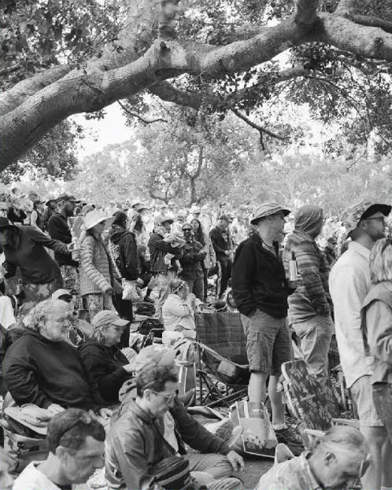
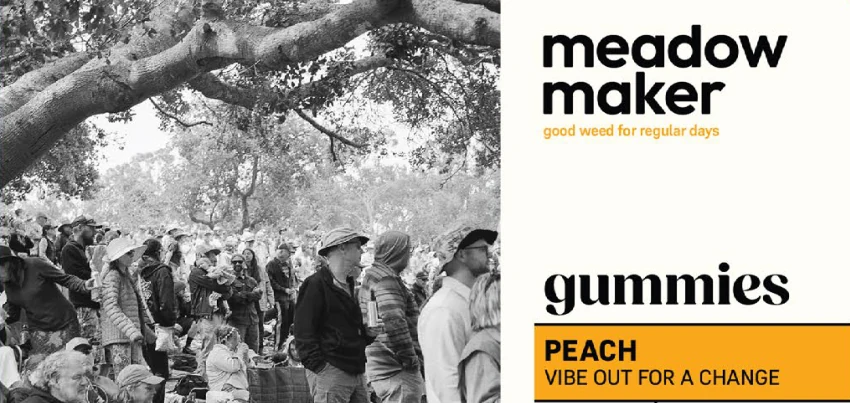

Meadow Maker
An everyday brand for gummies and pre-rolls. My packaging pairs film photography with a narrow strip of color for each flavor.
In development for New York
One product, start to finishAlex Buckner / A film in development
I want to follow a photograph from my Mamiya 7 onto a folded carton, and a plum from the orchard into the gummy that goes inside.

Alex steps into the light. The camera is already on the table. Hold until his hand enters the frame.
Stay close on the thumb, strap and weight of the Mamiya 7 as it leaves the table.
Over Alex’s shoulder, settle on a gesture in the crowd. Cut on the shutter.
Match the rotation of the film advance to the turn of the closed developing tank.
Lift the dry strip to the light. Let the loupe stop on one frame.
Keep the same orientation as the negative settles into the scanner holder.
The Meadow Maker crowd artwork fills the screen. Hold long enough to choose a face.
Rake light across two boards. Alex bends the toothier sheet and feels it spring back.
Move the crop and flavor band into register on the flat sheet. Keep the wordmark clear of the score.
After printing, reveal the cut edges, score channels and six glue locations in the structural study.
Match-cut from the flat conversion proof to the pre-glued carton. Lift the tray walls and leave the hinged lid open.
Stay with the stem as the fruit twists free of the branch.
At the farm, turn a ripe plum in the hand. Match the skin to the ink on the carton.
Cut at the stone and turn the halves apart. Carry that motion into the pan.
Hold on the ribbon of honey until it disappears between the pieces of fruit.
Draw a spoon through a cooled sample of plum-honey jam. Follow the same flavor into a gummy-base trial.
Fold the trial jam into the gummy base; cut on the first smooth ribbon.
Follow one stream into one mold cavity. Cut from that single piece to the repeatable row.
Peel the flexible mold away. Watch the piece hold its corners.
Release the set pieces onto trays. Hold low on the rows as the rack slides into place.
Weigh a sample, inspect its shape and set aside an imperfect piece before packing.
Pull a piece apart in the window light to examine the center.
Stay with the pause after Alex tastes a separate sample. Give his reaction time.
Lower a sealed inner pack from the accepted lot into the open carton.
Bring the lid down. Hold on the original photograph, now on the box. Let the latch be the last sound.
I’m a founder and operator in Brooklyn. My work spans regulated consumer products, including cannabis and hemp.
Built a hemp manufacturing company to seven-figure revenue with my partner.
Designed and made dozens of products for larger brands.
Built a working AI operating system for my businesses, without an engineering team.
What I'm building now
AI has shrunk the team a business needs. A small company can now run most of its own supply chain, from raw inputs to delivery, if its systems are wired into one.
I'm building that kind of company in New York: three brands, a production facility designed in 3D before construction, and one system that runs all of it. The same idea applies to food, farming, housing, and any business that makes a physical thing.
I take a consumer product from idea to shelf: the formula, the packaging, the cost model, the state labeling rules and the brand around it.

An everyday brand for gummies and pre-rolls. My packaging pairs film photography with a narrow strip of color for each flavor.
In development for New York
One product, start to finishA flavor-led line of vapes and gummies built around fresh-frozen flower. It started in hemp.
In development for New York
Small-batch hash products, sold with a reusable stash box that customers keep and refill.
In development for New York
Dozens of products designed and manufactured for larger brands at the hemp company I built with my partner.
To addClient names, with permission
I plan production before anything is bought: the floor, each line, the people at each station, and what a normal day should produce.
A 2D and 3D planning tool for a real production building. It models the equipment, the staff each task needs, the output and the cost. The operators in it walk, grip and carry like real people.
Filling, pre-roll, gummy and packaging lines, taken from vendor quotes to exact positions on the floor.
A model of each machine, built to the maker's dimensions, so a layout can be dragged into place and tested before money is spent.
I design AI systems that do real operating work. I build them in three layers: the data, the tools that read it, and the agents that act on it.
3.1
I start by turning a messy business into clean, linked records. Every person, company, project, place, machine and product is one defined thing, with its facts and its links to other things. Each fact is stored once and traces back to its source.
MachineExample, demo data
NameCartridge filler
Located inProduction floor
Part ofFilling line
Needs2 operators
SourceVendor quote, page 2
Blue values link to other records.
Kinds of thing the system knows
3.2
Each tool is the same set of records, seen a different way. Once the data is clean, a new tool is mostly a new view.
A whole state market in one picture: who makes each product, who sells it, and where the money moves. Runs on more than 5 million rows of sales records.
Every task, linked to what it is waiting on. Pick a name and see that person's work in the order it can be done.
Every retail store on a map, with what sells there. Built for planning sales visits.
3.3
Agents act on the data, and a person stays in charge of anything that matters.
Capture, check, record, act, verify. The result of every action goes back in as new evidence.
Changes that are easy to undo go straight in. Serious ones wait for a yes.
One writes a sales strategy every week. One checks email and the record every hour and proposes updates.
All three layers in one system
The operating system I built for my own businesses. It keeps one current record of everything (people, projects, equipment, money owed) and lets AI agents act on it with permission.
Read the case studyI photograph the products, the places and the people who make them. Short films about how things get built come next.
Contact sheet 01